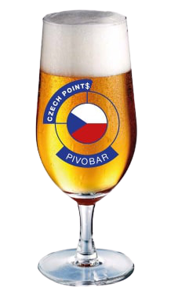
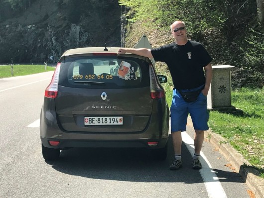
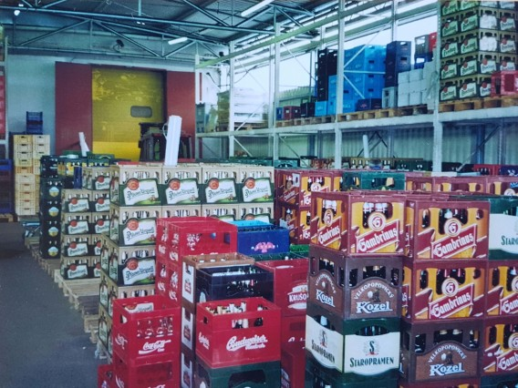
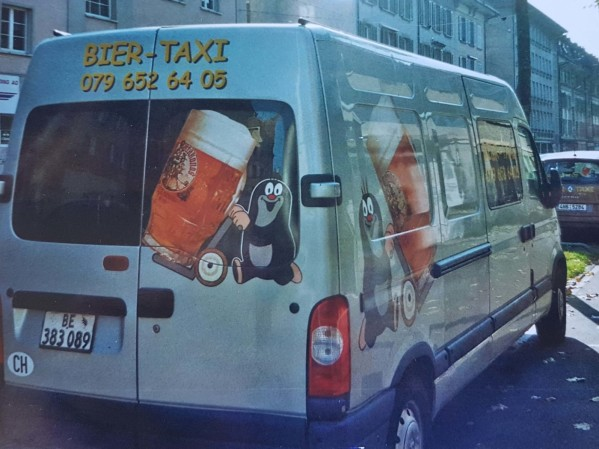
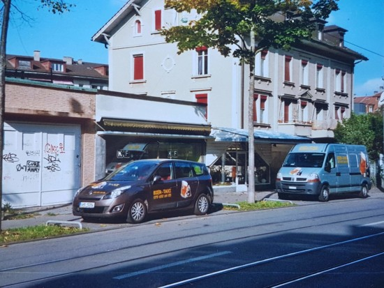

Bières tchèques en Suisse: Centrales de distribution: Bierzentrale Berne et Bierzentrale Zürich

Commandes et livraisons - Biertaxi
Nous avons des variantes intéressantes pour chaque goût. Pour plus d`amples informations veuillez nous contacter au numéro suivant:

Mo. – Fr. 8:00 – 19:00 Uhr / Sa. 9:00 – 17:00 Uhr




